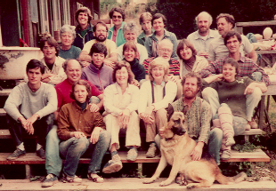
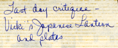
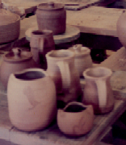
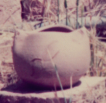
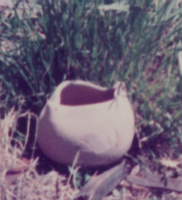

Big Creek Pottery
|
last updated 2002-10-22-15:10 -0700 (pdt) activity A830600 |
Big Creek Pottery
|
last updated 2002-10-22-15:10 -0700 (pdt) activity A830600 |
Big Creek Pottery, July 1983 
- Betsy Parks, Dorothy Wissmar, Wynne Noble, Rick Sherman
- Susan Brody, Jim Gremel, Lee Luria, Ces Hamilton, Dick Lumaghi
- Lee Smith, Donna Lee, Jean Edwards, Warren MacKenzie, Karen Truesdale, Joe Amaral
- Mark Sanchez, Fred Paynter, Vicki Whitten (Hamilton), Barbara Frey, Becky Maddalena
- Cynthia Peck, Graham Stevens
- Max the studio dog
Not pictured: Paul Bennett and Mary Jane Littleton from Murray, Kentucky--she cooked for us

Also submitted for critique was Vicki's Creation, a pinched pot.

Along with the lidded pot, there was introduction of an allied pinched-pot theme, "Vicki's Creation." Wherever lidded pots arise, pinched pots are not far behind.


created 2002-10-04-11:07 -0700 (pst) by orcmid
$$Author: Vicki $
$$Date: 03-08-10 11:59 $
$$Revision: 16 $
{kind=link}
{kind=link}
{kind=link}
{kind=link}